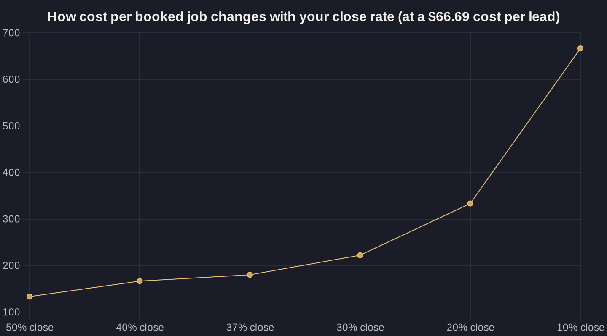

Cost Per Booked Job: The Only Ad Metric That Tells the Truth
Cheap leads can hide an expensive problem. Here is why cost per booked job beats cost per lead, how to calculate it, and what a healthy number looks like for a local service business.

Key takeaways
- Cost per lead measures interest; cost per acquisition (cost per booked job) measures revenue — only the second one tells you whether your ads make money.
- Industry-blind CPL benchmarks are misleading: cost per lead varies more than 4x across industries ($30.57 restaurants to $131.63 legal), and blended CPL spreads from ~$91 to ~$653.
- Cost per booked job = CPL divided by your close rate, so a $66.69 lead becomes a $167 job at a 40% close rate but a $333 job at 20% — the close rate is your biggest lever.
- For local businesses the conversion happens on the phone: 37% of phone leads convert during the call, so answer rate and follow-up speed move your true cost more than bid tweaks.
- You can't lower a cost you don't track — tying closed jobs back to the keyword (enhanced conversions) lifted one advertiser's conversions 114% year over year.
Cost Per Acquisition vs Cost Per Lead: Why One Number Lies
Every owner who runs ads eventually hits the same wall. The dashboard says leads are cheap, the phone is ringing, and the bank account quietly disagrees. That gap almost always traces back to one confusion: cost per acquisition vs cost per lead. The two sound interchangeable. They are not, and treating them as the same number is how good money disappears without anyone noticing.
Cost per lead (CPL = what you pay for one form fill or phone call) measures interest. Cost per acquisition (CPA = what you pay for one customer who actually buys) measures revenue. A lead is a maybe; an acquisition is a booked job. Across 13,474 search campaigns, the average Google Ads cost per lead landed at $66.69 and fell year over year for the first time in five years — but that figure says nothing about how many of those leads ever became paying customers.
The metric that tells the truth sits one step further down the funnel: cost per booked job. It is the total ad spend divided by the number of jobs you actually put on the calendar. For the full framework this fits inside, see how to measure marketing ROI for a local business.
What "Cheap Leads" Actually Cost You
A low CPL feels like winning. The problem is that a lead is the cheapest, least meaningful step in the chain, and its price swings wildly by trade. Cost per lead varies more than 4x by industry — from $131.63 for Attorneys and Legal Services down to $30.57 for Restaurants and Food. An industry-blind benchmark is worse than no benchmark, because it tells you to feel good or bad for the wrong reasons.
Blended across all channels the spread is even more brutal. HubSpot data shows blended cost per lead near $653 for Financial Services and $649 for Legal versus about $91 for Ecommerce. Two businesses can both brag about their CPL and be telling completely different financial stories.
Here is the trap: you can lower CPL by buying lower-quality leads, and your reports will look better while your revenue gets worse. The leak is invisible at the lead level — it only shows up once you follow the money down to booked work. That is the same blind spot we unpack in where local marketing budgets quietly leak.
Cost Per Acquisition vs Cost Per Lead: The Math Owners Need
Reframing cost per acquisition vs cost per lead is simpler than it sounds once you walk the funnel one step at a time. You pay for clicks, a fraction of clicks become leads, and a fraction of leads become booked jobs. The average Google Ads conversion rate is 8.18% against an average cost per click of $5.42 — so roughly $66 in clicks buys one lead, which lines up with the benchmark CPL.
But the lead is not the finish line. If 4 out of 10 leads book, your cost per booked job is your CPL divided by that close rate. A $66.69 lead at a 40% close rate is a $167 booked job; at a 20% close rate it is a $333 booked job — same lead price, double the real cost. The number that pays your bills is the second one.
The table below shows how the same advertised CPL turns into very different acquisition costs once you carry it down to a booked job.
The Phone Call Is Where Leads Turn Into Jobs
For most local service businesses the lead-to-job conversion happens on the phone, not the website — which is exactly why a form-fill CPL is so misleading. Invoca's analysis of more than 60 million calls found that 37% of phone leads convert during the call itself. The conversation, not the click, is where the money is decided.
The quality of that call matters as much as the volume. Invoca also reports that 61% of callers reach a live person and 35% of marketing-driven calls are qualified leads. Every missed or fumbled call is a booked job you already paid the ad cost for and then threw away.
This is why answer rate and response time move your cost per booked job more than bid tweaks ever will. We go deeper on that in why speed-to-lead decides who wins the job.
| Industry | Avg cost per lead | Lead-to-booked rate | Est. cost per booked job |
|---|---|---|---|
| Restaurants & Food | $30.57 | 37% | $82.62 |
| All industries (avg) | $66.69 | 37% | $180.24 |
| All industries (avg) | $66.69 | 20% | $333.45 |
| Attorneys & Legal | $131.63 | 37% | $355.76 |

You Can't Lower a Cost You Don't Track
Cost per booked job is only as honest as your tracking. If Google Ads never learns which clicks turned into real jobs, it optimizes toward cheap leads — the exact thing that inflates your true acquisition cost. Closing that loop is the highest-leverage fix most accounts are missing.
The lift is measurable. Google reports that Tennis Express grew Search-campaign conversions by 114% year over year after implementing enhanced conversions and better sitewide conversion tagging. Feed the platform down-funnel truth and it buys you more of what actually books.
The mechanics — call tracking, offline conversion imports, tying a closed job back to the keyword that started it — are the same mechanics that close the attribution gap between clicks and customers. Without them, cost per booked job is a guess dressed up as a number.
What a Healthy Cost Per Booked Job Looks Like
There is no universal target, because a $300 acquisition cost is a disaster for a restaurant and a steal for a law firm or an HVAC system replacement. The right way to set the ceiling is to work backward from the job: take your average revenue per job, subtract delivery costs and your required margin, and whatever is left is the most you can spend to acquire it.
Once you have that ceiling, your close rate becomes the lever that swings your cost the most. Starting from the benchmark $66.69 lead, the chart below shows how cost per booked job moves as your lead-to-job conversion rate changes — the difference between a 40% and a 20% close rate is the difference between a profitable channel and a leaking one.
Notice that the same campaign can be a winner or a loser depending entirely on what happens after the lead arrives. That is the whole argument for measuring cost per booked job: it forces sales, follow-up, and ad spend onto one honest scoreboard.
Start With the Number That Tells the Truth
If you only track one ad metric, make it cost per booked job. Cost per lead will tell you whether your ads are cheap; cost per booked job will tell you whether your business is making money. The whole point of resolving cost per acquisition vs cost per lead is to stop optimizing for the metric that flatters your dashboard and start optimizing for the one that fills your calendar.
The good news is that none of this requires a bigger budget — it requires connecting your phone, your CRM, and your ad account so a closed job traces back to the dollar that started it. Done once, it pays off every month, and it is the foundation that makes tools like AI for local service businesses genuinely useful instead of just busy.
If you want a clear read on what a booked job actually costs you right now, that is exactly what an Owner's Math session is for — tracing $1 of spend through to revenue. Book a call or join the newsletter, where we break down one local-business number worth knowing each week.
Sources
- WordStream (LOCALiQ) — 2026 Google Ads Benchmarks (2026)
- LOCALiQ — Search Advertising Benchmarks (2026)
- Invoca — Call Conversion Industry Benchmarks Report (2025)
- Invoca — Cross-Channel Buyer Conversion Benchmark Report (2025)
- Google — Enhanced Conversions (Tennis Express) (2026)
- HubSpot — CPL and CAC Benchmarks (2026)
Want this run on your numbers?
Book a call and we will run the Owner's Math on your business — clear numbers, a straight plan, no pitch. Or read the free Playbook first.